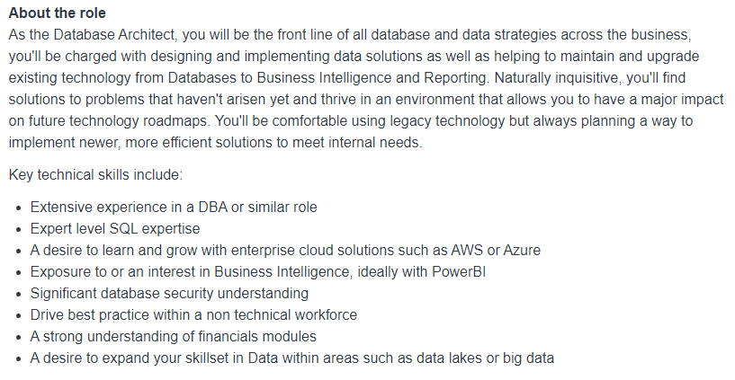

Sasha Bekier
Personal Information
| RMIT Student ID: | s3335379 |
| E-mail: | s3335379@student.rmit.edu.au |
| Git Repository: | Sasha's Intro to IT Github Repository |
| Github Page: | Sasha's Assessment 1 Website |
| About me: | I was born in 1976 so I'm two years younger than Alanis Morisette I was raised in rural South Australia and moved to Melbourne at the earliest opportunity. Currently I live near Bendigo, Victoria. I have engaged in a broad range of jobs including teaching, stamp describing (for the philatelic trade) and disability support work. Recreationally I am a massive fan of the fantasy genre and enjoy reading and watching fantasy content in addition to having an active interest in Dungeons & Dragons (and TTRPG's generally) and Magic the Gathering. My favourite authours are Stephen Donaldson and Steven Erikson. |
Interest in I.T.
My interest in IT was born with the arrival of a TRS-80 for my seventh birthday. Ever since then I have had a fascination with computing and computer programming. From those early steps smashing out programs in Basic I grew to obtain a Microsoft Certified Professional qualification in System administration with Windows 2000 Server, a Comptia technician certification and a Certificate IV in Assesment and Workplace training before taking on a role in the adult education sector. Leaving the adult education sector in 2007 I moved on to employment within the philatelic trade, first as a stamp describer and later developing an entire auction / shop suite in php and mysql.
I chose to study with RMIT because they offer a mature course that is well past its teething issues in the online world. As a busy person the flexible nature of online learning suits my life situation very well. Finally their Bachelor of IT course looks to be broad and wide reaching.
At the most simplistic level, I expect to learn how to program computers during my studies. Looking a little deeper, I expect to learn about industry best practice. Not only how to make a program work, but how to do so in a way that other programmers will understand and how to do so in a safe and secure way.
Ideal Job - Database Architect
Original Seek Listing [1]
PDF of Original Listing

Position Description
It is the role of a Database Architect to lead the design and implementation of new databases and to maintain and develop existing databases. A Database Architect is responsible for entire databases and their associated systems, ensuring the needs of users are met. DA's develop output reports and look after the security of the database system as a whole.
Required Skills, Qualifications and Experience
A Database Architect requires an excellent understanding of SQL, the relevant databasing platforms (such as Oracle, PostgreSQL or Microsoft SQL Server,) and, data security. The Database Architect is a senior role and suitable applicants will have significant, 4+ years, experience within a Database Administration or associated role. Obtaining a DBA role in itself requires some IT experience and each database platform has its own industry DBA qualification [2]. As such, a suitable applicant would most likely require more like 6-8 years experience in IT, with 4-6 of those years spent in roles directly related to database activities before being ready to become a Database Architect.
A Database Architect is also expected to be proactive regarding upskilling and staying on top of industry best practices. As a leadership role social skills will also come to the fore and a Database Architect will need to be able to translate comfortably between highly technical communication and communication with lay people, from on the ground end-users through to business operators and management.
Further specific requirements will vary depending on the specific role being considered. Generally a Database Architect role will require significant understanding of the field the databases are capturing information for, in this instance financials modules and business intelligence, but in a similar role this might require an understanding of cropping agriculture and agricultural science or some other specific field of enterprise.
My Current Skills, Qualifications and Experience
At this point in time I have some experience with MySQL, php and html/css. I have commenced RMIT's Bach. of IT. Additionally I have some transferrable skills, I have been a Team Leader within a disability support environment, granting me some experience in team management and stake holder interactions.
My Pathway from Now to the Role
Going forwards I should lean into anything database related I can select in terms of electives through my degree. I would be well served to pursue some of the industry DBA qualifications and to seek an entry-level IT role to start building towards obtaining a DBA role upon completing my degree. If obtaining a suitable DBA role proves difficult I would then look at post-graduate or masters study in a databasing field of study.
Once a DBA role has been secured it is time to focus on upskilling, both within the technical database space and more generally, working on business administration and broadening my industry knowledge base for whatever industry the DBA role is in. After several years in this role it should be viable to start seeking the Database Architect role.
Psychometric Profiles
The Tests
Seeking Meaning in Psychometric Profiles
Looking at the Myers Briggs Type Indicator (MBTI) I see that my strongest result is on the Introversion-Extroversion axis where it can be observed that I am highly introverted. My next strongest result is on the Sensing (Observant)-iNtuition axis, leaning toward the intution side of the scale. This suggests that I prefer to look at the whole system and abstract ideas rather than locking into a concrete instance. On the remaining three scales my scores are middling suggesting I switch between both aspects as the case dictates.
The Big 5 test shows 3 scores that are far from the median. A low extroversion score further emphasises the introverted result of the MBTI above. I was surprised by the very low Agreeableness score because I consider myself to behave in a fairly easy-going manner, but on consideration I realise that the test doesn't distinguish between thought and behaviour. I scored exceedingly highly on the Intellect//Imagination factor, drawing my attention to a tendency to consider what could be rather than fixating on the way things have been done to date.
Finally, the Honey and Mumford Learning Styles reinforces my introversion. When learning I prefer to create a model of the information mentally, apply that model to the real world and then consider the interaction between my mental model and the real world application. I struggle with arbitrary and unrealistic applications of knowledge as a means to generate applied repitition without the complexities that would be encountered in any real-world application
Insights into Team Dynamics
In a team environment I need to take active care to engage with other team members and not allow myself to fade into the background as more extroverted people take the fore. I need to be conscious of ensuring I treat other team members with respect at all times, even when they are still coming to an understanding that I have already processed. I need to remember that while feeling frustration is perfectly acceptable, it is important to weigh that frustration before expressing it and determine if the cause of the frustration will actually impede the project or if it is just annoying me personally. Lastly, I need to remember that other people process information differently to me and that that is okay.
Insights into Team Formation
These results can help guide me toward backing up my weaknesses in the process of team formation. They make it clear that I benefit from having an extroverted group member who is comfortable being the face of the group. I would also benefit from having group members who are well grounded and will stop me getting excited with an idea and immediately overcomplicating it. Additionally I benefit from having a group member who is really locked into the concrete instance we are working on to help me focus on the specific details of the case.
I.T. Project Idea
Project Overview - Stamp Quick ID
Stamp Quick ID, an app to rapidly and easily identify, describe and list philatelic stamps for sale. While there are many listing tools in the philatelic trade, all of them rely upon the stamp describer to initially identify the stamp. Taking inspiration from the insect identification keys of biological science, Stamp Quick ID will rapidly narrow down the range of options for identification, before stepping the user through any final determinations in the easiest possible route to definitive identification. Once the specific stamp is identified, the software will offer up any known varieties for consideration and then assist with putting together a sale listing.
The Driving Need
In the philatelic trade a great deal of time is spent determining the specific variation of many early stamps. It is not uncommon for one stamp image and colour pairing to then be broken up into four or more options, with vastly differing values, by factors not easily distinguished by the naked eye such as perforation type, watermarking and paper variations. While it is possible to specialise in a specific group of stamp issues, the scope of early philatelics is so large that no individual can retain the full gamut of technical knowledge needed to quickly and easily sort world wide issues. In the more modern era, while variations are less common and more easily determined, the sheer quantity of issues presents a similar problem.
The industry standard catalogues of stamp issues are designed more with the collector in mind than the dealer and it can be very challenging to be sure that the issue you have identified will not occur again in 10 pages time, without so much as an illustration. As such the standard catalogues fail the dealer. As the great majority of stamps are of very low retail values, this failing of the dealers by the catalogues leads directly to a failure of the dealers to meet the needs of their client base. Being able to quickly, easily and accurately describe stamps would facilitate greater availability of the less valuable varieties and allow dealers to have confidence that they have not missed anything when working over a stamp lot. In collectables knowledge is money after all.
Project Description
Phase one of development can be seen as proof of principle. We will develop a keying database for one Australian colony's issues. For the end user the software will be able to step them though the identification process. By filtering the options down for a stamp based on face value, printing colour or colours and stamp text we can rapidly narrow the field down to one particular design, value and colour issue, the 'simplified' level of identification.
From there the software can guide the user on finer toothed keyings, preferentially offering tests in order relevance and ease of execution, starting with perforation types and measurements before moving on to paper varieties, watermarks and finally colour variations.
At this point the software will have correctly identified the stamp to the 'comprehensive' level. The software will then offer up any additional relevant information such as significant printing varieties or common forgeries, the 'specialist' level of identification.
The software will then provide some pricing guidance and offer to generate a listing for the stamp identified. It will walk the user through the descriptive process, first branching around the stamps basic condition, mint or used. In the mint case the software will then guide the user on assessing the quality of the stamp, requesting the gum status. For used stamps the software will query the cancellation strike (there is an opportunity to expand the scope of the software here significantly to include postmarks.)
Once the mint/used varying questions have been resolved the program can rejoin the streams to query centering and any issues such as tears, creases or thins. At this point the software will be able to construct a standardised description of the item.
Phase two of development will see a broadening of scope, increasing the issues covered by the database significantly so that we have a genuinely useful tool.
Phase three of development can occur in tandem with phase two. It will see direct sales built into the system, allowing users to easily move from their generated description to an actual sale listing. This will allow the integration of price history data to be added to the software, removing its dependence on external pricing data. At this point we can also add a variety review system, allowing end users to submit unlisted varieties for addition to the software.
Phase four of development will see the software redeployed for the mobile environment, opening the door to using image capture and recognition systems to reduce the steps involved by the end user drastically. While there are several stamp image recognition systems in existence, they don't work very well and struggle to cope with the sheer scale of possible matches. Stamp Quick ID will address this issue by using the keying guides developed in phase one and two in conjunction with image recognition to facilitate greater accuracy of identification.
Required Tools and Technologies
Phase one and two will require fairly standard website fare, a web server and a database. The most straight forward solution would be Linux, Apache, MySQL and PHP (a LAMP stack.) Beyond that we will require development machines with a coding environment (such as notepad++) and a git repository.
Phase three will introduce the need for a dedicated server and SSL certificate to facilitate managing financial transactions for the shop. The shop software itself can be developed on the existing LAMP. Additionally some variety of payment gateway solution will be required now.
Phase four will see the need to introduce new coding platforms for Android and iPhone development. It will also call for the introduction of image recognition to work in tandem with mobile device cameras.
Required Skills
Web development skills, HTML, CSS and PHP. API development skills - so that we don’t have to rebuild the program logic at phase 4. SQL, Database development & administration, and, security will also be required from the outset. We will also require relevant philatelic expertise to drive the data, keying logic and description system .
The shop will necessitate expertise regarding search engine optimisation and online payment systems. Phase four development will see a big jump in required skills requiring multiplatform mobile app development as well as image recognition development.
Successful Outcomes
Successful development of the Stamp Quick ID system will result in a significant reduction in labour costs of description for stamp dealers and allow less experienced operators to engage in the stamp trade with greater confidence. It will create a viable system for the sale of the great majority of stamps with low individual retail value which are currently not able to be sold effectively on line.
For the collector, it will undo the tyranny of distance and increase the accessibility of the stamp collecting hobby. It will facilitate collector to collector trading and open the door to the more challenging areas of collecting that can be off-putting in their complexity. Finally it will allow hoarder/collectors to actually process their stock quickly and effectively.
References
[1] "Database Architect Job in Sydney NSW," SEEK. https://www.seek.com.au/job/59479230?type=standard#sol=44a5be46dc83a1ba3c742bc3ce64562e60c498cd (accessed Dec. 15, 2022).
[2] "The Ultimate Guide on how to Become a Database Administrator," www.pluralsight.com. https://www.pluralsight.com/resource-center/guides/guide-to-becoming-a-database-admin (accessed Dec. 15, 2022).
[3] NERIS Analytics Limited, "Free personality test | 16Personalities," 16Personalities, 2011. https://www.16personalities.com/free-personality-test (accessed Dec 03, 2022)
[4] "Big Five Personality Test," openpsychometrics.org. http://openpsychometrics.org/tests/IPIP-BFFM/ (accessed Dec 03, 2022)
[5] Mint Human Resources, "Honey and Mumford Learning Style Questionnaire," Mint-hr.com, 2019. https://www.mint-hr.com/mumford.html (accessed Dec 03, 2022)
Palette generated utilising
F. Bianchi, “Coolors,” Coolors.co, 2018. https://coolors.co/